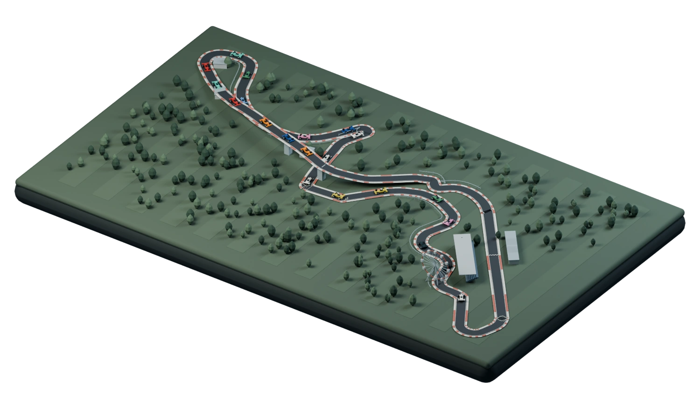
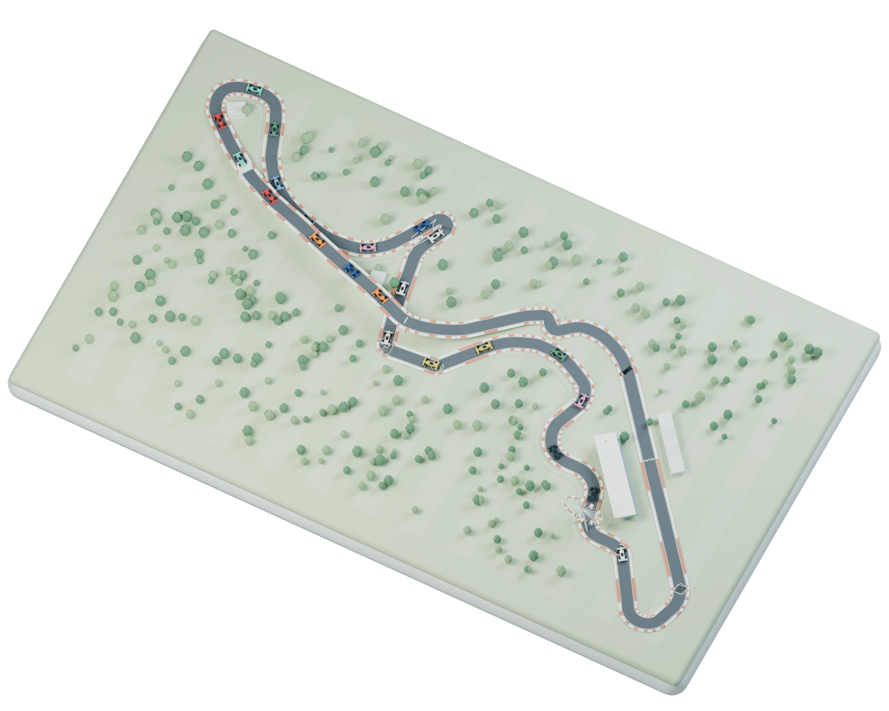
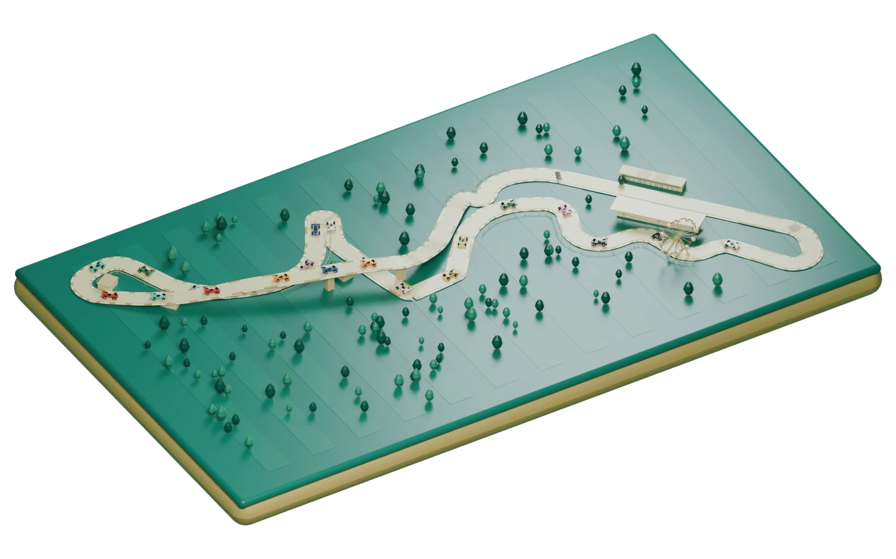

Demo race
Japanese Grand Prix
Suzuka
Lap
31
/ 53

1 NOR
2 VER
Drag to orbit
22 cars on circuit
Circuit
Follow
Battle
Race order
All 22
1
Norris
NOR
Leader
2
Verstappen
VER
+1.842s
3
Piastri
PIA
+4.106s
Simulated positions
Sync
A — Race instrument
A machined miniature, studio lighting, precise timing. A quieter alternative to the red-and-black broadcast dashboard.
Demo race
Japanese Grand Prix
Suzuka
Lap
31
/ 53
5.807 km · 18 turns
Full circuit

1 NOR
2 VER
Full circuit · 22 cars
Norris leads.
Verstappen is
1.842s
behind.
Race order
All 22 drivers
Circuit
Follow
Battle
Simulated positions
Sync
B — Broadcast atlas
A daylight race atlas with the glanceability of Apple Sports. The whole field first; one sentence explains the lead.
Race room
Japanese Grand Prix
Suzuka
Lap
31
/ 53
Demo race · 22 cars

1 NOR
2 VER
Turn the whole circuit
Race order
All 22
1
NOR
Leader
2
VER
+1.842s
3
PIA
+4.106s
Circuit
Follow
Battle
Simulated positions
Sync
C — Tabletop
An enamel slot-car world, with an ivory circuit on deep jade. More tactile and surprising; deliberately less broadcast-like.